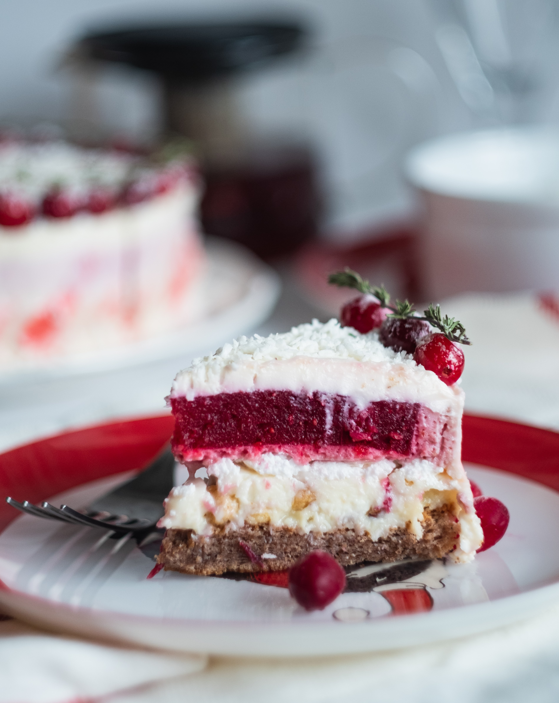

Cake
케이크는 달걀과 밀가루, 설탕을 주재료로 하여 특정한 모양으로 구운 감미로운 디저트입니다.
케이크는 곡물의 분말(주로 밀가루), 결착제(달걀과 밀가루에 포함된 글루텐), 지방(식물성 기름, 버터, 라드 등),
수분(물, 우유, 우락유, 과일 퓌레 등), 팽창제(효모, 베이킹 소다, 베이킹파우더 등)을 배합하여 만듭니다.
또한 서양에서는 구운 것을 일반적으로 케이크라고 합니다.
케이크는 빵의 변형이라고 할 수 있으며, 간단하거나 반대로 정교할 수 있고
페이스트리, 머랭, 커스터드 및 파이와 같은 디저트들과 특징을 공유합니다.
구워진 빵에 생크림 등의 재료를 발라 케이크 표면을 매끄럽게 마무리하는 아이싱 과정과
여러 모양의 장식물로 개성 있게 꾸미는 데코레이션 과정을 거쳐
맛과 형태가 다른 다양한 종류의 케이크를 만듭니다.
최근에는 아이스크림 케이크, 떡 케이크, 슈가크래프트 케이크 등
주재료로 밀가루가 아닌 다른 재료를 사용하여 만든 새로운 개념의 케이크가 등장하였습니다.
Cake is a form of sweet food made from flour, sugar, and other ingredients, that is usually baked.
In their oldest forms, cakes were modifications of bread,
but cakes now cover a wide range of preparations that can be simple or elaborate,
and that share features with other desserts such as pastries, meringues, custards, and pies.
The most commonly used cake ingredients include flour, sugar, eggs, butter or oil or margarine,
a liquid, and leavening agents, such as baking soda or baking powder.
Cakes can also be filled with fruit preserves, nuts or dessert sauces (like pastry cream),
iced with buttercream or other icings, and decorated with marzipan, piped borders, or candied fruit.
ケーキ（英語：cake）は、洋菓子の一種。
日本語で単にケーキというと、一般には、スポンジケーキにクリームを塗り果物を載せたものを指すが、
広義では、チーズケーキやフルーツケーキなどクリームや果物を載せないものや、
クッキーを砕いた土台の上にクリームチーズの生地を敷き、冷やして固めたレアチーズケーキなど、様々な種類を指すこともある。
多くのケーキは何らかの穀物の粉末（多くは小麦粉）、結着剤（多くは鶏卵や小麦粉に含まれるグルテン）、
油脂（植物油、バター、ラード、シュマルツなど）、水分（水、牛乳、バターミルク、果物のピュレーなど）、
膨張剤（酵母、重曹、ベーキングパウダーなど）を配合して作られる。